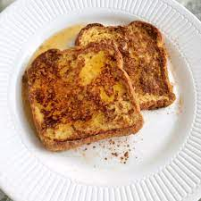

French Toast

There are many, fancy variations on this basic recipe. This easy recipe works with many types of bread-whie, whole wheat, brioche, cinamon-raisin, ialian or french. Serve hot with butter or margarine and maple syrup.
Ingredients
- 2/3 cups milk
- 2 large eggs
- 1 teaspoon vanilla extract (optional)
- 1/4 teaspoon ground cinnamon (optional)
- salt to taste
- 6 thick slices bread
- 1 tablespoon unsalted butter, or more as needed
Steps
- Whisk milk, eggs, vanilla, cinnamon, and salt together in a shallow bowl.
- Lightly butter a griddle and heat over medium-high heat.
- Dunk bread in the egg mixture, soaking both sides. Transfer to the hot skillet and cook until golden, 3 to 4 minutes per side. Serve hot.